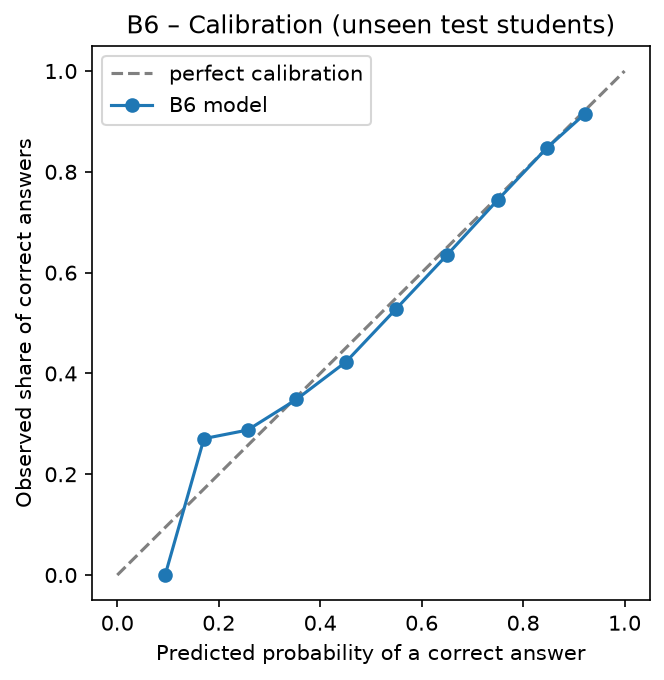

Kodun, raporun ve algoritmaların 5 kişiye bölünmüş açıklaması
Bu belge sadece grubun içi içindir, teslim edilmez.
Teslim edilenler: math_buddy_its.ipynb, report/Math_Buddy_ITS_Report.pdf, outputs/, diagram/, test_drawings/, requirements.txt.
| Kişi | Konu | Rapordaki sayfalar | Notebook bölümleri |
|---|---|---|---|
| Kişi 1 | Çerçeve, ortak kavramlar, metrikler + B6 Mastery | 1–8, 21–24, 42–45 | Başlık, 0. Setup, B6 |
| Kişi 2 | Görsel: B3 El yazısı + B4 Dikkat | 9–11, 15–16 | B3.1–B3.9, B4.1–B4.7 |
| Kişi 3 | Ses: B5a Sesli rakam + B5b Özgüven | 12–14, 16–17 | B5a.1–B5a.9, B5b.1–B5b.7 |
| Kişi 4 | Metin: B1 İlgi, B2 Zorlanılan konu, Sentiment | 18–21 | Text blocks, B1, B2, Sentiment |
| Kişi 5 | Unsupervised: B7 Hata tipleri + B8 Öğrenci profilleri | 25–31 | B7.1–B7.6, B8.1–B8.6 |
| Herkes | B9 Kök neden teşhisi, B10 Beceri haritası, Demo, label'lar, diyagram = kod (rehber bölüm 6) | 32–41 | 0.1, B9, B10, 10 |
Nasıl kullanılır: Herkes önce "Bölüm 0 – Ortak temel"i okusun (Kişi 1 anlatır).
Sonra herkes kendi bölümünü derinlemesine çalışsın. En sondaki "Herkesin asgari bilmesi gerekenler" bölümünü herkes ezberleyecek kadar bilsin.
Kutuların anlamı: 💡 benzetme
✔ akılda kalsın
hoca sorarsa
Bu bölümü Kişi 1 sunumda anlatır ama herkes bilmelidir; diğer bütün bölümler buradaki kavramları kullanır.
Math Buddy, ilkokul matematiği için bir tablet öğretmenidir. Hocanın istediği şey: bir akıllı öğretmenin (ITS) her işlevini bir makine öğrenmesi görevi (bir "blok") olarak çizmek, her bloğa giren verinin sütunlarını ve çıkan sonucun yapısını tanımlamak, Python'da yazmak ve raporda kodu/çıktıyı açıklamak. Bizde 11 blok var: 8 supervised (B1, B2, B3, B4, B5a, B5b, B6, B9), 3 unsupervised (B7, B8, B10).
Her veri seti bir tablodur (pandas DataFrame). Bir satır = bir örnek (bir resim, bir mesaj, bir cevap…).
Sütunlar = özellikler (features / attributes). Supervised bloklarda bir sütun da etikettir (label). Kodda hep:
X = giriş sütunları, y = etiket sütunu. Hocanın "attributes in the structure of each dataset" dediği şey X'in sütunlarıdır.
X_train, X_test, y_train, y_test = train_test_split(X, y, test_size=0.2, stratify=y, random_state=42)
Veriyi ikiye böleriz: %80 eğitim (model buradan öğrenir), %20 test (model bunu hiç görmez, en sonda sınav olur).
X ve y ikisi de bölündüğü için 4 parça çıkar. stratify=y → her sınıfın oranı iki parçada da aynı kalır (örn. B5b'de %40 hesitant
hem train'de hem test'te %40). random_state=42 → her çalıştırmada aynı bölme (tekrarlanabilirlik).
Data leakage (veri sızıntısı): test verisinden bir bilginin eğitim sırasında modele sızması. Örnek: scaler'ı bütün veriye fit edersek
ortalama hesaplanırken test satırları da kullanılır → model sınav hakkında ipucu almış olur, sonuç gerçekçi olmayan şekilde iyi çıkar.
Çözüm: Pipeline([("scaler", StandardScaler()), ("classifier", LogisticRegression())]). Pipeline'a fit(X_train, y_train)
dediğimizde tüm adımlar sadece train'de öğrenir; predict(X_test) dediğimizde test sadece transform edilir.
Projemizde leakage'a karşı aldığımız diğer önlemler (sorulursa bunları sayın): B1/B2'de tekrar eden mesajları silmek, B5a.9'da kalibrasyon kayıtlarını
teste koymamak, B6'da shift() ile bir satırın kendi sonucunu görmemesi, B6'da öğrenciye göre bölme, B6'da güveni "şu anki cevaptan" değil "geçmişten" almak.
| Araç | Ne yapar | Örnek (önce → sonra) | Nerede |
|---|---|---|---|
StandardScaler | Her sütunu ortalama 0, standart sapma 1 olacak şekilde ölçekler: z = (x − ortalama) / std | MFCC 1: −695…−244 ve MFCC std 20: 0.6…28 → ikisi de ~ −2…+2 | B3, B5a, B5b, B6, B7, B8 |
SimpleImputer(strategy="median") | Eksik değeri (NaN) sütunun medyanıyla doldurur (medyan train'den öğrenilir) | gaze = NaN → 0.74 | B4 |
OneHotEncoder | Kategorik sütunu 0/1 sütunlarına çevirir | topic="fractions" → [0,0,0,0,1] | B6, B8 (ve B7 karşılaştırma) |
ColumnTransformer | Farklı sütunlara farklı işlem uygular | sayısal → scaler, kategorik → one-hot | B6, B8 |
TfidfVectorizer | Metni sayı vektörüne çevirir (Kişi 4 anlatır) | "I love pizza" → [0, …, 0.71, …] | B1, B2, Sentiment |
B3 (load_digits, MNIST) ve B5a (Free Spoken Digit Dataset) gerçek veri. Diğer bloklar için çocuklara ait, tam bu sütunlara sahip açık veri seti yok; bu yüzden kodla ürettik (sentetik). Kurallar: sınıflar birbirine karışacak şekilde üretildi (gürültü), yoksa her model %100 alır ve gerçekçi olmaz. Raporda gerçek sistemde verinin nereden geleceği yazılı: kamera → MediaPipe, mikrofon → librosa, uygulamanın kendi cevap kayıtları → B6–B8. Kullanılabilecek gerçek veri setleri: B1 Yellowbrick hobbies, B2 ASDiv, B4 DAiSEE/EngageNet, B5b Harvard Uncertainty, B6 ASSISTments, B7 Eedi, B8 OULAD.
Her blok bir fonksiyonla biter: girdisi ve çıktısı net. Örn. b4_detect_attention(0.42, 28, 17) → {'state': 'distracted', ...}.
Bloklar birbirini sadece bu fonksiyonlarla kullanır; böylece bir blok kapatılıp yerine yedeği konabilir (örn. B3 kapalıysa sesli cevap B5a).
Hocanın ilk sorusu: "Bir ITS'ten hangi gereksinimler beklenir?" Raporda 11 gereksinim (R1–R11) var ve her birinin hangi blokla karşılandığı yazılı. En önemli ikisi önceki ödevden gelen zorunlu gereksinimler:
Senaryo (Can, 3. sınıf): sohbet → ilgi (B1) → zorlanılan konu (B2) → parmakla yazma (B3) veya sesli cevap (B5a) + ses tonu (B5b) → kamera ile dikkat (B4) → her cevaptan sonra mastery güncellenir (B6) → hafta sonu öğretmen paneli: hata tipleri (B7) ve profiller (B8). Hocanın ipucuna uygun olarak etkileşimler modaliteye göre ayrıldı: metin (B1, B2), görsel (B3, B4), ses (B5a, B5b).
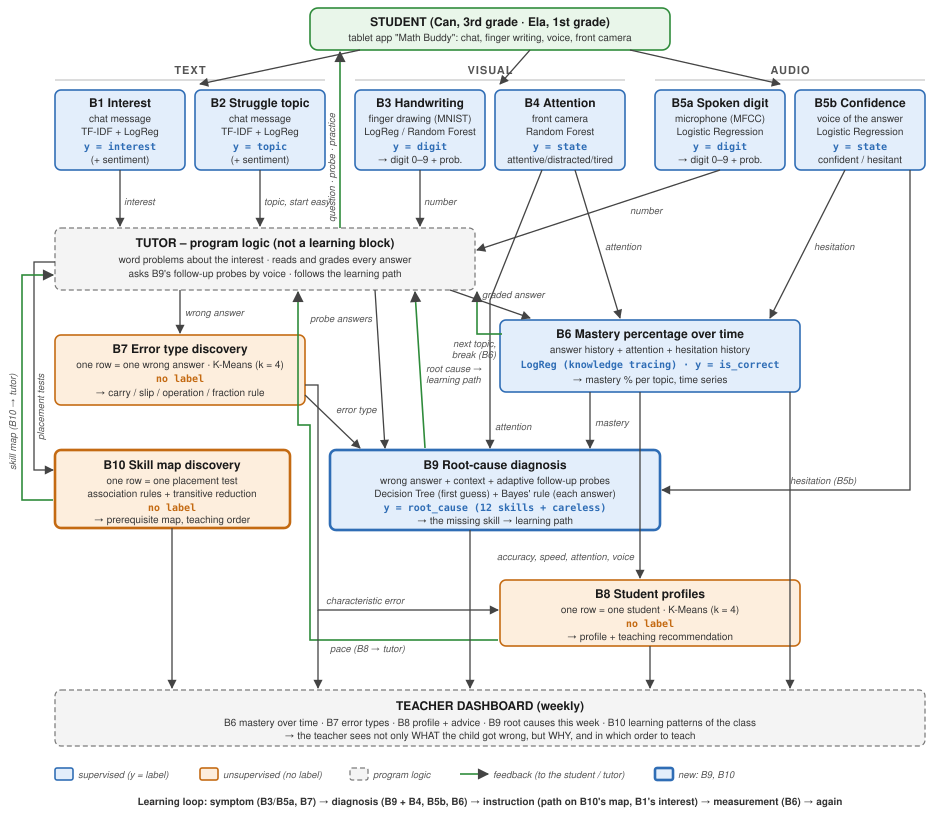
Hocanın 2. ve 3. sorusu: her bloğa giren veri setinin attribute'ları ve her bloğun çıktısının yapısı. Tablodaki sütunlar:
"One row =" (bir satır neyi temsil ediyor), "Input attributes", "Label" (unsupervised'da yok), "Output structure". Bu tabloyu sunumda satır satır
okuyabilmelisin. Örnek: B4 – bir satır = 10 saniyelik kamera penceresi; sütunlar screen_gaze_ratio, head_angle, blink_rate;
etiket state; çıktı {state, probabilities}.
import os, warnings, numpy as np, pandas as pd, matplotlib.pyplot as plt
from sklearn.model_selection import train_test_split
from sklearn.preprocessing import StandardScaler
from sklearn.pipeline import Pipeline
from sklearn.linear_model import LogisticRegression
from sklearn.metrics import accuracy_score, classification_report, confusion_matrix, ConfusionMatrixDisplay
RANDOM_STATE = 42; OUTPUT_DIR = "outputs"; os.makedirs(OUTPUT_DIR, exist_ok=True)
np.random.seed(RANDOM_STATE); pd.set_option("display.max_columns", 20)
warnings.filterwarnings("ignore", category=FutureWarning)
def save_figure(fig, filename): fig.savefig(os.path.join(OUTPUT_DIR, filename), dpi=150, bbox_inches="tight")
RANDOM_STATE = 42: rastgelelik "tohumu". Aynı tohum → her çalıştırmada aynı veri, aynı bölme, aynı model (tekrarlanabilirlik).os.makedirs(..., exist_ok=True): outputs klasörünü yoksa oluşturur.save_figure: her grafiği outputs/ içine PNG olarak kaydeder; rapordaki bütün şekiller oradan geliyor.Setup complete.Rapor s. 8'deki "Implementation overview": her supervised blok aynı şablonu izler: Data → Preprocessing → Train/test split → Model → Evaluation → Example prediction (Can) → Block function. Blok sırası B3, B5a, B4, B5b, B1/B2, B6, B7, B8'dir çünkü B6 B4/B5b'yi, B7 B6'yı, B8 ise B6 ve B7'yi kullanır.
Görevi: her cevaptan sonra Can'ın her konuyu ne kadar öğrendiğini (yüzde) tahmin etmek ve bunu zaman serisi olarak tutmak (R6).
Tanım: bir konunun mastery'si = öğrencinin o konudan orta zorlukta bir soruyu dikkatliyken doğru cevaplama olasılığı.
Bu yönteme knowledge tracing denir; bizim yaptığımız (geçmiş üzerinden Logistic Regression) literatürde Performance Factors Analysis (PFA).
Etiket is_correct bedavadır: sistem her cevaptan sonra doğru/yanlış olduğunu zaten bilir.
TOPIC_START = {"addition": 0.8, "subtraction": 0.3, "multiplication": -0.6, "division": -1.0, "fractions": -1.4}
GUESS, SLIP = 0.15, 0.05
def true_mastery_from_skill(skill):
knows = sigmoid(skill)
return knows * (1 - SLIP) + (1 - knows) * GUESS
def make_student_profile(rng):
ability = rng.normal(0, 0.7)
return {"start_skill": {t: TOPIC_START[t] + ability + rng.normal(0, 0.5) for t in TOPICS},
"learning_rate": ..., "distractibility": rng.beta(2, 6), "speech_preference": rng.beta(2, 3)}
ability: öğrencinin genel yeteneği (normal dağılım), tüm konulara eklenir. Ayrıca konuya özel küçük bir sapma eklenir.sigmoid(skill): beceriyi 0–1 arası "bilme olasılığına" çevirir (sigmoid'i Kişi 3 detaylı anlatıyor; S şeklinde eğri).true_mastery = bilir × (1 − slip) + bilmez × guess.distractibility (Beta(2,6), ortalama ~0.25): ne sıklıkta dikkatinin dağıldığı (B4); speech_preference: sesli cevap verme oranı.def simulate_student(student_id, profile, rng, n_days=28):
for day in range(n_days):
if day == 0: questions = [(t, 2) for t in TOPICS for _ in range(5)] # placement test
elif rng.random() < 0.2: continue # skipped day
else: questions = [...8–12 random (topic, difficulty)...]
for topic, difficulty in questions:
attention = rng.choice(["attentive","distracted","tired"], p=[0.9-p, p, 0.1])
knows = rng.random() < sigmoid(skill[topic] - 0.8*(difficulty-2) + ATTENTION_EFFECT[attention])
slip = SLIP if attention == "attentive" else 3*SLIP
is_correct = int(rng.random() < (1 - slip if knows else GUESS))
answer_mode = "speech" if rng.random() < speech_preference else "handwriting"
is_hesitant = (rng.random() < (0.15 if knows else 0.7)) if speech else NaN
skill[topic] += learning_rate # learning by practice
Answers: 48047 | students: 200 | days: 28 Overall share of correct answers: 0.61 addition 0.756, subtraction 0.709, multiplication 0.582, division 0.525, fractions 0.476
Simülasyonu biz yazdığımız için her an gerçek mastery (true_mastery) bilinir; model asla görmez ama sonradan tahmini kontrol etmemizi sağlar.
Gerçek veride bu imkânsızdır.
groups = log.groupby(["student_id", "topic"]) log["attempt_no"] = groups.cumcount() past_correct = groups["is_correct"].transform(lambda s: s.shift().fillna(0).cumsum()) recent_correct = groups["is_correct"].transform(lambda s: s.shift().rolling(5, min_periods=1).sum()) log["prev_correct_ratio"] = (past_correct + 1) / (attempt_no + 2) log["recent_correct_ratio"] = (recent_correct + 1) / (min(attempt_no, 5) + 2) log["prev_hesitant_ratio"] = (past_hesitant + 0.3) / (past_spoken + 1)
shift() her değeri bir satır aşağı kaydırır; böylece her satır sadece önceki cevapları görür.groupby(["student_id","topic"]): her öğrenci-konu çifti ayrı bir geçmiş. cumcount(): 0, 1, 2… → daha önce kaç soru çözülmüş.cumsum(): kümülatif toplam; rolling(5): son 5 cevaplık kayan pencere (yakın geçmiş).splitter = GroupShuffleSplit(n_splits=1, test_size=0.2, random_state=RANDOM_STATE) train_idx, test_idx = next(splitter.split(b6_df, groups=b6_df["student_id"]))
Satırları rastgele bölseydik aynı öğrencinin cevapları hem train'de hem test'te olurdu ve model test öğrencisini "tanırdı". GroupShuffleSplit
öğrencileri böler: 160 öğrenci (38,531 cevap) train, 40 hiç görülmemiş öğrenci (9,516 cevap) test, ortak öğrenci 0. Can da yeni bir öğrenci olacağı için doğru test budur.
b6_model = Pipeline([("prepare", ColumnTransformer([
("numeric", StandardScaler(), ["difficulty","attempt_no","prev_correct_ratio","recent_correct_ratio","prev_hesitant_ratio"]),
("categorical", OneHotEncoder(handle_unknown="ignore"), ["topic","attention"])])),
("classifier", LogisticRegression(max_iter=1000))])
Sayısal sütunlar ölçeklenir, topic ve attention one-hot olur (ölçeklenmez), sonra Logistic Regression P(doğru) verir
(Logistic Regression'ın iç işleyişi Kişi 2 ve Kişi 3 bölümlerinde şekille anlatılıyor).
Accuracy 0.679 ROC AUC 0.725 (always guessing 'correct': 0.599) attention_attentive +0.523, prev_correct_ratio +0.424, topic_addition +0.386, attempt_no +0.319 ... attention_distracted -0.229, topic_fractions -0.259, difficulty -0.379

def mastery_estimate(rows):
standard = rows[B6_FEATURES].copy(); standard["difficulty"] = 2; standard["attention"] = "attentive"
return b6_model.predict_proba(standard)[:, 1]
Mastery tanımına uymak için her satırda zorluk = 2 ve dikkat = attentive yapılıp olasılık alınır. Sonuç: ortalama hata model 8.1, basit formül (doğru ÷ toplam) 16.0 yüzde puan → model hatayı yarıya indiriyor. Cold start: yeni öğrencide hiç cevap yokken hata 12.4, seviye sınavından (5 soru) sonra 8.9, 10+ sorudan sonra ~8. Basit formül 10 sorudan sonra kötüleşiyor (14.2 → 17.6) çünkü eski hataları hiç unutmuyor, öğrenci ise öğrenmeye devam ediyor.

b6_mastery(answers): öğrencinin tüm cevaplarını alır, her konu için sona bir "probe" (deneme) satırı ekler (orta zorluk, dikkatli, sonucu boş),
geçmiş özelliklerini hesaplar, probe satırları için olasılığı verir → {topic: %}. Can'ın 4 haftası:
Before any answer: addition 62.9, subtraction 59.9, multiplication 52.5, division 50.2, fractions 47.1 After the placement test: addition 82.8, subtraction 65.5, multiplication 38.8, division 46.1, fractions 44.1 After 4 weeks: addition 86.6, subtraction 86.5, multiplication 53.9, division 67.3, fractions 65.6

"How the blocks work together" tablosu her bloğun çıktısının bir sonraki bloğa hangi sütun olarak girdiğini gösterir (örn. B4 → B6'da attention, B8'de avg_attention).
Can için zincir: B2 "çarpma zor" der → B6 en zayıf konusunu çarpma (%53.9) bulur → B7 eldeyi unuttuğunu bulur → B8 onu "Prefers speaking" profiline koyar.
Kısıtlar: sentetik veri, B3'te dağılım kayması, B5a'da yeni ses, TF-IDF'in bilinmeyen kelimeler, K-Means'in yuvarlak küme varsayımı, çocuk verisinin gizliliği.
digits = load_digits()
pixel_columns = [f"pixel_{i}" for i in range(1, 65)]
b3_df = pd.DataFrame(digits.data, columns=pixel_columns); b3_df["digit"] = digits.target
load_digits: sklearn içinde gelen gerçek veri, 1797 el yazısı rakam, her biri 8×8 = 64 piksel. 8×8 resim satır satır düzleştirilip 64 sütun yapılır.value_counts() → her rakamdan ~180 örnek (174–183), sınıflar dengeli.reshape(8, 8) ile tekrar resme çevirip imshow ile çizer (gray_r = ters gri, mürekkep siyah).isna().sum().sum() → 0 eksik değer, imputer gerekmiyor. Aralık 0–16. Ölçekleme pipeline içinde yapılacak.stratify → train (1437, 64), test (360, 64).b3_model = Pipeline([("scaler", StandardScaler()),
("classifier", LogisticRegression(max_iter=2000, random_state=RANDOM_STATE))])
b3_model.fit(X_b3_train, y_b3_train)
y_b3_pred = b3_model.predict(X_b3_test)
B3 test accuracy: 0.972 digits 1 and 8: precision/recall 0.89, others ≥ 0.97
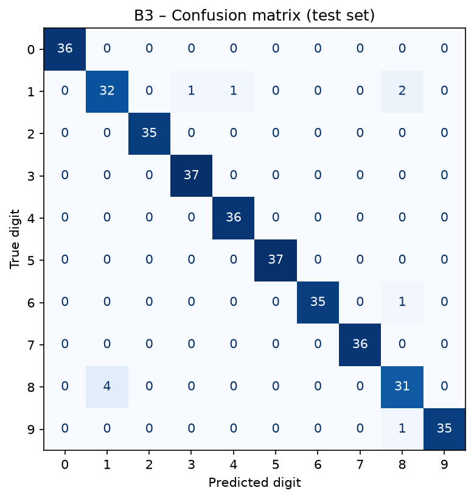
360 test resminin %97.2'si doğru. Zayıf olan 1 ve 8: 8×8'de eğik bir 1 ile ince bir 8 çok benzer pikseller paylaşır.
can_index = y_b3_test[y_b3_test == 7].index[0]
can_image = X_b3_test.loc[[can_index]] # double brackets -> stays a 1-row table
probabilities = b3_model.predict_proba(can_image)[0]
top3 = np.argsort(probabilities)[::-1][:3]
def b3_read_handwriting(pixels):
x = pd.DataFrame([np.asarray(pixels, dtype=float).ravel()], columns=pixel_columns)
probabilities = b3_model.predict_proba(x)[0]; best = int(np.argmax(probabilities))
return {"digit": int(b3_model.classes_[best]), "probability": round(float(probabilities[best]), 3)}
[[...]] tek satırı tablo olarak tutar (model tablo bekler).argsort(...)[::-1][:3]: olasılıkları sıralar, ters çevirir, en yüksek 3'ü alır.{'digit': 7, 'probability': 0.999} → CORRECT.ravel(): 8×8'i 64'lük düz diziye çevirir; argmax: en yüksek olasılığın indeksi.Elle çizilmiş rakamlarla test ettik: 8×8 ızgaraya yazılmış ince 1, küçük 4, ince 0 ve fareyle çizilmiş gerçek bir 6 (test_drawings/drawn_six.png).
INK = {".": 0, "+": 8, "#": 16}: ASCII çizimleri piksel değerine çevirir.load_ink: resmi gri tonlamaya çevirir (convert("L")) ve 255 − değer ile tersine çevirir (mürekkep = yüksek).drawing_to_8x8: load_digits'in nasıl üretildiğini taklit eder: eşik (>60) ile mürekkebi bul → etrafını kırp → MaxFilter ile çizgiyi kalınlaştır →
32×32'ye sığdır → 4×4 bloklardaki mürekkep piksellerini say (reshape(8,4,8,4).sum(axis=(1,3))) → 0–16 arası 8×8.thin 1 -> 3 (0.999) | small 4 -> 8 (1.0) | thin 0 -> 4 | real 6 plain resize -> 4 (0.996) | real 6 load_digits-style -> 5
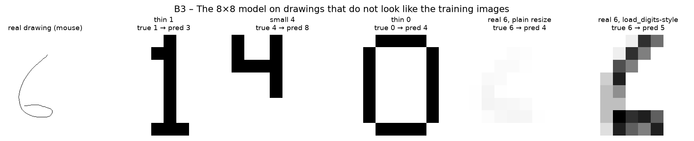
Neden? (1) Distribution shift (dağılım kayması): eğitim resimleri yumuşak/gri/kalın, gerçek çizimler ince/keskin. Test başarısı %97 olsa da gerçek hayatta garanti değil; yüksek olasılık da garanti değil. (2) 8×8 çok küçük: 6'nın deliği kayboluyor.
mnist = fetch_openml("mnist_784", version=1, as_frame=False, parser="liac-arff")
X_mnist_train, y_mnist_train = X_mnist[:60000], y_mnist[:60000] # official split
b3_mnist_model = RandomForestClassifier(n_estimators=100, n_jobs=-1, random_state=RANDOM_STATE)
parser="liac-arff": yüklü pandas sürümüyle varsayılan okuyucu çalışmadığı için.n_jobs=-1 = tüm işlemci çekirdeklerini kullan. Ağaçlar ölçekleme istemez; 784 ham pikselde Logistic Regression hem yavaş hem zayıf.drawing_to_mnist: çizimi MNIST gibi hazırlar: kırp → %8 kalınlaştır → 20×20 kutuya sığdır (LANCZOS = kaliteli küçültme) → 28×28 tuvale koy →
ağırlık merkezini (ndimage.center_of_mass) ortaya kaydır (ndimage.shift). MNIST resimleri tam böyle hazırlanmıştır.B3 (MNIST) test accuracy: 0.969 (8×8 model: 0.972)
8×8 model : {'digit': 5, 'probability': 0.495} MNIST model: {'digit': 6, 'probability': 0.75}
Test başarısı benzer ama gerçek 6 artık doğru okunuyor: 28×28'de delik korunuyor. Demo ve web uygulaması MNIST modelini kullanır (b3_read_drawing).

Decision tree: veriyi evet/hayır sorularıyla böler. Her adımda sınıfları en iyi ayıran soruyu (hangi sütun, hangi eşik) kendisi seçer; "iyi ayırmak" = soru sonrası grupların mümkün olduğunca saf (tek sınıftan) olması (sklearn'de Gini impurity ölçüsü). Sorun: derin bir ağaç eğitim verisini ezberler (overfitting).
Random Forest = birçok ağaç + oylama. Ağaçların farklı olması için iki rastgelelik: (1) her ağaç eğitim satırlarından yerine koyarak çekilmiş farklı bir örneklemle eğitilir (bootstrap); (2) her soruda ağaç sütunların sadece rastgele bir alt kümesine bakabilir. Böylece ağaçlar farklı hatalar yapar ve oylamada hatalar birbirini götürür.
n_estimators = ağaç sayısı (B3.9: 100, B4: 200). max_depth=6 (B4) = bir ağaç en fazla 6 soru arka arkaya sorabilir → ezber sınırlanır.Görevi: ön kamera Can'ı izler; her 10 saniyede attentive / distracted / tired kararı verir. Tutor tepki verir (dağınık → kısa mesaj, yorgun → mola) ve B6 bu durumu kullanır.
ATTENTION_PROFILES = {
"attentive": {"screen_gaze_ratio": (0.85, 0.08), "head_angle": (6, 5), "blink_rate": (15, 4)},
"distracted": {"screen_gaze_ratio": (0.45, 0.15), "head_angle": (25, 9), "blink_rate": (17, 5)},
"tired": {"screen_gaze_ratio": (0.65, 0.12), "head_angle": (15, 7), "blink_rate": (26, 6)}}
part = pd.DataFrame({f: rng.normal(mean, std, n) for f, (mean, std) in profile.items()})
data["screen_gaze_ratio"] = data["screen_gaze_ratio"].clip(0, 1)
data["head_angle"] = data["head_angle"].abs().clip(0, 60)
mask = rng.random((len(data), 3)) < 0.03 ; data[...] = data[...].mask(mask) # ~3% NaN
data.sample(frac=1, random_state=RANDOM_STATE) # shuffle rows
rng.normal(ortalama, std, n) bu dağılımdan n değer çeker.clip: fiziksel olarak mümkün aralıkta tut (bakış oranı 0–1); abs(): açı negatif olamaz.sample(frac=1): satırları karıştırır.
Ön işleme: eksik değerler: gaze 50, head 41, blink 45 → SimpleImputer(strategy="median") ile train medyanı. Ölçekleme yok (ağaç modeli).
Bölme: 1200 / 300.
b4_model = Pipeline([("imputer", SimpleImputer(strategy="median")),
("classifier", RandomForestClassifier(n_estimators=200, max_depth=6, random_state=RANDOM_STATE))])
Training accuracy: 0.946 Test accuracy: 0.897 Gap: 0.049 attentive F1 0.96 | distracted F1 0.88 | tired F1 0.86 Feature importance: screen_gaze_ratio 0.418, blink_rate 0.299, head_angle 0.283
max_depth=6).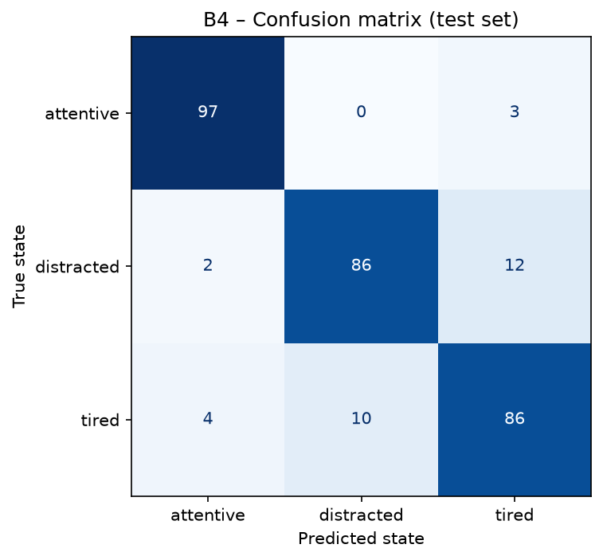

Can looking out of the window (0.42, 28, 17) -> distracted 0.988 -> "Hey Can, the ball is here! ⚽" Can focused (0.90, 4, 14) -> attentive 0.981 | Can sleepy (0.66, 14, 30) -> tired 0.955 Camera lost the face (None, 12, 16) -> attentive 0.502, distracted 0.199, tired 0.300
b4_detect_attention(gaze, head, blink) → {state, probabilities}. Bakış değeri eksikse medyanla doldurulur → model "ortalama bir çocuk" görür ve
kararsız kalır (%50). Bu bilinçli bir sadelik; gerçek sistemde yüzün uzun süre kaybolması kendi başına bir sinyal olabilir.
Ses kaydı, havadaki basıncın saniyede 8000 kez ölçülmüş halidir (çok uzun bir sayı listesi). MFCC (Mel-Frequency Cepstral Coefficients), kısa zaman dilimlerinde sesin frekans dağılımının şeklini, insan kulağının duyduğuna benzer şekilde (mel ölçeği: alçak frekanslara daha hassas) 20 sayıyla özetler. "Dokuz" ile "beş"in sesi farklı frekans şekilleri üretir; model bu farkı öğrenir.
def extract_mfcc_features(wav_path):
signal, sr = librosa.load(wav_path, sr=8000)
mfcc = librosa.feature.mfcc(y=signal, sr=sr, n_mfcc=20, n_fft=512) # shape: (20, n_frames)
return np.concatenate([mfcc.mean(axis=1), mfcc.std(axis=1)])
for path in sorted(glob.glob(os.path.join(FSDD_DIR, "*.wav"))):
digit, speaker, _ = os.path.basename(path)[:-4].split("_") # "9_george_3.wav" -> 9, george
librosa.load(..., sr=8000): dosyayı 8 kHz'de okur. n_fft=512: her çerçevenin frekans analizi pencere boyu (uyarıları önler).mean(axis=1): her katsayının tüm çerçeveler boyunca ortalaması (satır bazında). glob: klasördeki tüm .wav dosyalarını listeler.
mfcc_mean_1 −695…−244, mfcc_std_20 0.6…28 → StandardScaler şart (yoksa büyük sayılı sütun baskın olur).StandardScaler → LogisticRegression(max_iter=3000) (B3 ile aynı yapı, Şekil 2.1).B5a test accuracy: 0.915 "four" F1 1.00 | "three" F1 0.86 | "six" F1 0.85
Can says "nine" (9_jackson_44.wav) -> {'digit': 9, 'probability': 0.944} CORRECT
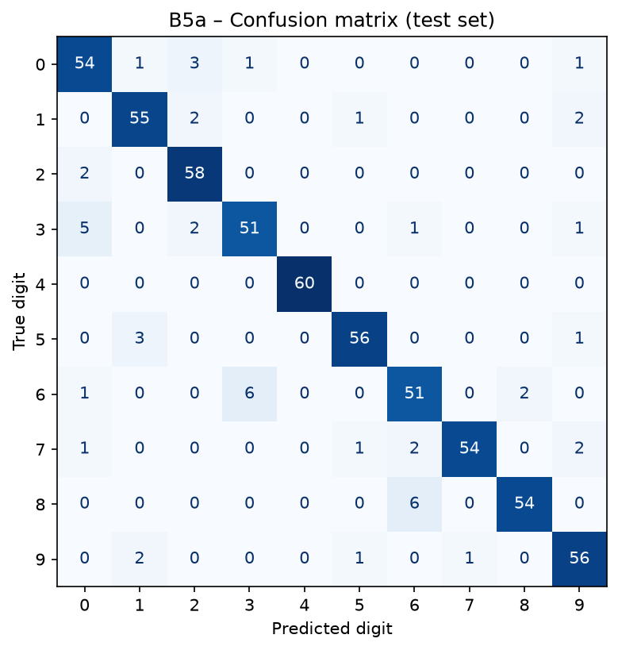
Blok fonksiyonu: b5a_recognize_speech(wav_path) → .wav yolunu alır, MFCC çıkarır, {digit, probability} döndürür.
speaker_scores = cross_val_score(clone(b5a_model), X_b5a, y_b5a, groups=b5a_df["speaker"],
cv=LeaveOneGroupOut(), scoring="accuracy")
Rastgele bölmede aynı 6 kişinin kayıtları hem train'de hem test'te → model test seslerini zaten tanıyor, %91.5 iyimser. Can'ın sesi ise yeni.
LeaveOneGroupOut: 5 kişiyle eğit, 6.'da test et; her kişi için tekrar. cross_val_score bu 6 turu çalıştırır, clone modelin eğitilmemiş bir kopyasını yapar.
george 0.252 | jackson 0.550 | lucas 0.434 | nicolas 0.320 | theo 0.702 | yweweler 0.718 Average accuracy on an unseen speaker: 0.496 (random split: 0.915)
Sonuç: yeni seste başarı yarıya iniyor. 6 yetişkin konuşmacı bir çocuğun sesine genellemek için çok az.
for new_speaker in speakers:
others = b5a_df[b5a_df["speaker"] != new_speaker]; new_student = b5a_df[b5a_df["speaker"] == new_speaker]
shuffled = new_student.sample(frac=1, random_state=rng)
position_within_digit = shuffled.groupby("digit").cumcount() # 0,1,2,... inside each digit
for k in [0, 1, 2, 3, 5, 10]:
calibration = shuffled[position_within_digit < k] # k recordings per digit
test_part = shuffled[position_within_digit >= k] # never tested on calibration
model = clone(b5a_model).fit(pd.concat([others, calibration])[mfcc_columns], ...)
Fikir: ilk gün "benden sonra her sayıyı söyle" oyunu; çocuğun k kaydı eğitim verisine eklenir ve model yeniden eğitilir. Simülasyon: her konuşmacı sırayla "Can" olur.
groupby("digit").cumcount() her rakam içinde sıra numarası verir → ilk k tanesi kalibrasyon. Kalibrasyon kayıtları asla test edilmez (leakage yok).
pivot: sonuç tablosunu konuşmacı × k şeklinde düzenler.
k: 0 1 2 3 5 10 average: 0.496 0.612 0.658 0.699 0.755 0.821
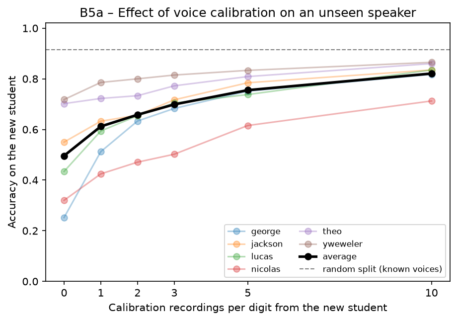
30 kayıt (~1 dakika, k=3) ile %50 → %70; 100 kayıtla %82. B8'in "Prefers speaking" profili bu kalibrasyonu öneriyor.
İki sınıf olunca Logistic Regression tek bir ağırlıklı toplam (z) hesaplar ve sigmoid ile olasılığa çevirir (çok sınıfta bunun genellemesi softmax). Adında "regression" olsa da bir sınıflandırma modelidir. Özellikler ölçeklendiği için katsayıların büyüklüğü karşılaştırılabilir.
Görevi: B5a ne söylendiğini, B5b nasıl söylendiğini bulur. "Nine!" ve "Hmm… nine?" aynı cevap ama ikincisi muhtemelen tahmin → mastery için daha zayıf kanıt. Bu sentiment analizi değil (kelimelerin olumlu/olumsuzluğu değil, sesteki kesinlik) – paralinguistik analiz.
def make(n, rate, pauses, delay, pitch, state):
return pd.DataFrame({"speech_rate": rng.normal(rate, 0.8, n).clip(0.8, 7),
"pause_count": rng.poisson(pauses, n),
"response_delay": rng.lognormal(np.log(delay), 0.45, n).round(2),
"pitch_variation": rng.normal(pitch, 0.8, n).clip(0.2, None), "state": state})
data = pd.concat([make(600, 4.0, 0.5, 1.2, 2.0, "confident"), make(400, 2.9, 2.0, 2.8, 3.0, "hesitant")])
density=True (sayı yerine yoğunluk; farklı sınıf boyları karşılaştırılabilir).
b5b_model = Pipeline([("scaler", StandardScaler()), ("classifier", LogisticRegression(max_iter=1000))])
Training accuracy: 0.931 Test accuracy: 0.935 confident F1 0.95 | hesitant F1 0.92 Coefficients: response_delay +2.734, pause_count +1.474, pitch_variation +1.188, speech_rate -1.497 "Nine!" -> confident, p_hesitant 0.003 "Hmm... nine?" -> hesitant, p_hesitant 1.0
coef_[0]: ikili modelde tek katsayı satırı. list(classes_).index("hesitant"): predict_proba'da hangi sütunun hesitant olduğunu bulur.b5b_detect_confidence(rate, pauses, delay, pitch) → {state, p_hesitant}. B6 bunu "geçmiş tereddüt oranı" olarak kullanır.

Oturum başında tutor sohbet eder. B1: mesajdan ilgi alanı (sports / animals / food / games) → kişiselleştirilmiş problemler. B2: zorlanılan konu (addition / subtraction / multiplication / division / fractions). İkisi de ayrıca sentiment (positive / neutral / negative) döndürür, çünkü "I love football" ile "I hate football" ikisi de spor ama sadece ilkinde futbol problemleri sorulmalı. B2'de negatif mesaj → kolay sorularla başla.
INTEREST_ITEMS = {"sports": [("football", "played football"), ("basketball", "played basketball"), ...], ...}
B1_TEMPLATES = {"positive": ["I love {noun}", "I {activity} {when} and it was so much fun", ...],
"negative": ["I hate {noun}", "{Noun} is so boring", ...], "neutral": ["I {activity} {when}", ...]}
sentiment = rng.choice(["positive","negative","neutral"], p=[0.40, 0.25, 0.35])
sentence = rng.choice(B1_TEMPLATES[sentiment]).format(noun=..., Noun=capitalize(noun), activity=..., when=..., who=...)
message = with_opener(opener, sentence) + ending
if rng.random() < 0.15: message += " Then I " + another interest's activity # confusing second sentence
rows.append({"message": add_typos(message, rng), "interest": interest, "sentiment": sentiment})
{when}, {who}, açılışlar ("Guess what?"), kapanışlar (":)") gibi değişken yerler → bir şablondan çok farklı cümle.rng.choice(..., p=[...]): verilen olasılıklarla seçim. .format(...): şablondaki boşlukları doldurur.capitalize/decapitalize/with_opener: cümle başı büyük harf düzeltmeleri ("Hmm, pizza is…").add_typos ile uzun kelimelerden %4 ihtimalle bir harf düşürme, olumsuzluk kalıpları ("not boring at all").add_sentiment_label_noise: sentiment etiketlerinin %8'i rastgele değiştirilir – gerçekte etiketleyen insanlar kısa mesajlarda anlaşamaz; %100 başarı gerçekçi olmaz.drop_duplicates: aynı cümle hem train hem test'e düşmesin (leakage). B1: 1600 → 1597, B2: 1500 → 1392.TfidfVectorizer metni küçük harfe çevirir, kelimelere böler, kelime dağarcığını (vocabulary) ve IDF'leri sadece train mesajlarından öğrenir (pipeline'ın ilk adımı).
Eğitimde hiç görülmemiş kelime tahmin sırasında yok sayılır.b1_model = Pipeline([("tfidf", TfidfVectorizer()),
("classifier", LogisticRegression(max_iter=1000, random_state=RANDOM_STATE))])
Training messages: 1277 Test messages: 320 Vocabulary size: 349 Training accuracy: 0.934 Test accuracy: 0.884 animals F1 0.87 | food F1 0.90 | games F1 0.90 | sports F1 0.88 (37 misclassified) "I hate puppies. Then I played basketball." true animals -> predicted sports
coef_ (sınıf × kelime ağırlık matrisi) her sınıf için argsort ile en büyük 6 ağırlık. Sports: football, gymnastics, baseball, team…;
food: popcorn, pizza… Animals'da "my" var çünkü şablonlarda "my cat, my dog" geçiyor – anlam değil şablon kalıbı (raporda belirttik).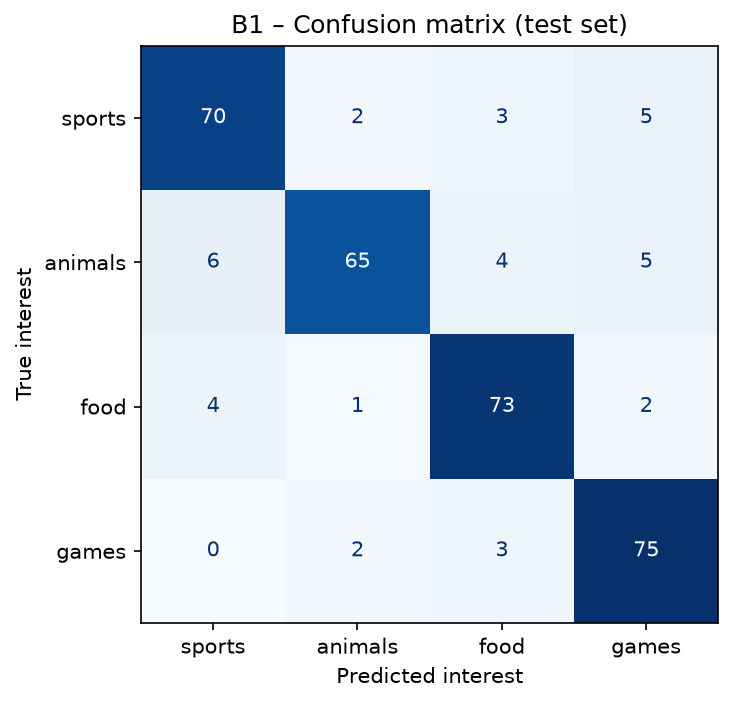
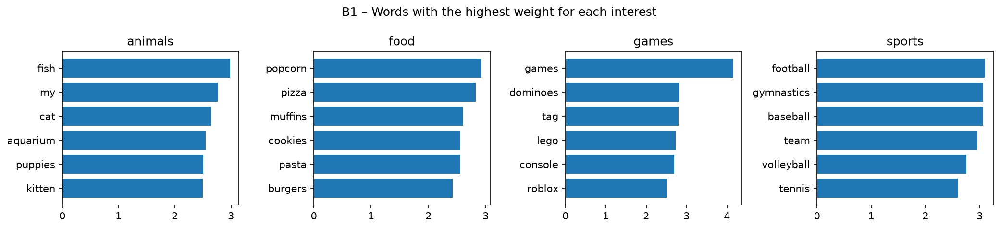
Aynı pipeline; 1113 train / 279 test mesaj.
Training accuracy: 0.930 Test accuracy: 0.892 (F1 0.88–0.92 for all topics; 30 misclassified) "Long division is easy, but I cried during subtracting big numbers" true subtraction -> predicted division
Hatalar çoğunlukla iki konulu mesajlar: model "but" kelimesinin anlamı ters çevirdiğini bilmez (TF-IDF kelime sırasına bakmaz). "repeated addition" aslında çarpma ama "addition" kelimesi içeriyor.
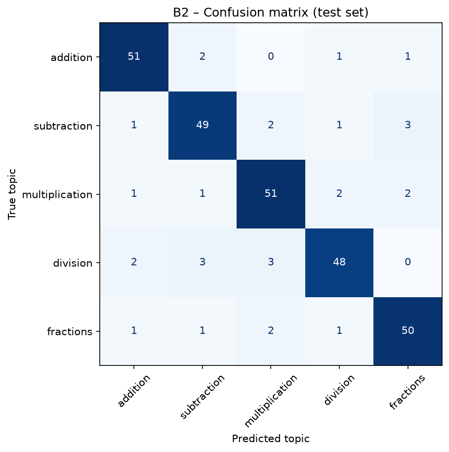
sentiment_df = pd.concat([b1_df[["message","sentiment"]], b2_df[["message","sentiment"]]]) # 2989 messages
for ngram_range in [(1, 1), (1, 2)]:
Pipeline([("tfidf", TfidfVectorizer(ngram_range=ngram_range)), ("classifier", LogisticRegression(...))])
single words (1,1) cross-validation accuracy (training messages): 0.898 words + word pairs (1,2) cross-validation accuracy (training messages): 0.910 -> kept as sentiment_model Test accuracy of the chosen model: 0.905 negative F1 0.92 | neutral F1 0.90 | positive F1 0.89
Neden çapraz doğrulama? İki modelden birini test skoruna bakarak seçersek test seti artık "hiç görülmemiş" değildir (seçim yanlılığı). Seçimi eğitim verisinde 5 katlı çapraz doğrulamayla yapıyoruz; test setini sadece en sonda, seçilen model için bir kez kullanıyoruz.
Tek sentiment modeli hem hobi hem matematik mesajlarıyla eğitilir. Not: varsayılan tokenizer "can't"ı "can" + "t" olarak böler ve tek harfli "t"yi atar.

def b1_analyze_message(message):
probabilities = b1_model.predict_proba([message])[0]; best = int(np.argmax(probabilities))
sentiment = str(sentiment_model.predict([message])[0])
return {"interest": ..., "probability": ..., "sentiment": sentiment, "use_for_problems": sentiment != "negative"}
"Today I played football with my friends, it was awesome!" -> sports 0.715, positive, use_for_problems True "I hate football, it's so boring" -> sports 0.797, negative, use_for_problems False "I played soccer today" -> games 0.487 (WRONG: 'soccer' never seen in training) "I don't understand multiplication at all" -> multiplication 0.738, negative, start_easy True
Mesaj liste içinde verilir ([message]) çünkü vectorizer bir mesaj listesi bekler. "soccer" kelimesini bilerek eğitim verisine koymadık: TF-IDF bilinmeyen kelimeyi yok sayar.
DistilBERT (hocanın 6. haftada paylaştığı model; BERT'in küçültülmüş hali, önceden milyonlarca metinle eğitilmiş) "soccer ≈ football" olduğunu bilir → gelecek çalışma.
n_clusters=k: küme sayısı önceden verilmeli. n_init=10: 10 farklı rastgele başlangıç dener, en iyisini (en düşük inertia) tutar.predict → en yakın merkez (yeniden eğitim yok). Train/test bölmesi yok çünkü etiket yok.def make_question(operation, difficulty, rng): # harder -> bigger numbers; fraction = (numerator, denominator)
def correct_answer(operation, a, b): # fractions: common denominator with lcm
def digit_columns(a, b): # 47, 38 -> [(7, 8), (4, 3)] ones column first
def needs_carry(operation, a, b): # a carry from a NON-leftmost column (or a borrow)
def wrong_answer(operation, a, b, error_type, rng):
forgot_carry : 47 + 38 -> 75 ; 52 - 38 -> 24 ; 23 × 4 -> 82
careless_slip : correct ± 1 or 2 (fraction: numerator ± 1)
wrong_operation: + -> |a-b| ; - -> a+b ; × -> a+b ; ÷ -> a-b
fraction_rule : 1/2 + 1/3 -> (1+1)/(2+3) = 2/5
b7_tendency = {sid: rng.dirichlet([2, 2, 2]) for sid in students} # personal tendency, sums to 1
lcm: en küçük ortak kat (kesirlerde ortak payda). digit_columns: sütun yöntemiyle basamaklar (birler önce).needs_carry = 1 ise mümkün. En soldaki sütunun eldesi sayılmaz (90 + 20 = 110 eldesiz de yazılır; 7 + 8 = 15 ezber bilgidir).error_type_weights: kesirde %65 fraction_rule / %35 slip; dikkat dağınıksa (B4) slip 2 katı; kişisel eğilim dirichlet ile (3 oran, toplamı 1).while True ... break: "yanlış" cevap tesadüfen doğruya eşit çıkarsa (2 + 2 = 2 × 2) yeni soru çekilir.Wrong answers: 18740 from 200 students careless_slip 9009, wrong_operation 5110, fraction_rule 2934, forgot_carry 1687 44 - 35 -> 19 (forgot_carry) | 2/6 + 2/3 -> 4/9 (fraction_rule) | 6 × 4 -> 10 (wrong_operation)
steps = df["difference"].abs() * df["correct_denominator"] "size_ratio_log": np.log2(df["ratio"].clip(lower=1/64)).abs() "error_steps_log": np.log10(steps) "diff_is_tens": (operation != "fractions") & (difference % 10 == 0) "same_denominator": given_denominator == correct_denominator
size_ratio_log: |log₂(verilen ÷ doğru)| – 0 = aynı büyüklük, 1 = yarısı/iki katı (yanlış işlem büyük çıkar).error_steps_log: farkın log₁₀'u, "adım" cinsinden (kesirde 1/payda bir adım) – 0 = bir adım, 1 = 10 adım.diff_is_tens: fark ±10, ±100… mü (elde unutmanın imzası). same_denominator: kesir cevabı doğru paydayı korumuş mu (0 → fraction_rule).operation ve needs_carry soruyu anlatır, hatayı değil → kümelemeye girmez. Sonra StandardScaler (ortalama 0, std 1).for k in range(2, 9):
km = KMeans(n_clusters=k, n_init=10, random_state=RANDOM_STATE).fit(b7_X_scaled)
inertias.append(km.inertia_); silhouettes.append(silhouette_score(b7_X_scaled, km.labels_, sample_size=5000))
k: 2 3 4 5 6 7 8 silhouette: 0.491 0.628 0.717 0.678 0.677 0.665 0.606 -> k = 4 (elbow + highest silhouette)
sample_size=5000: silhouette her nokta çifti arası mesafe ister, 18,740 noktada yavaş → 5000'lik örneklemle hesaplanır.

centers = pd.DataFrame(b7_scaler.inverse_transform(b7_kmeans.cluster_centers_), columns=B7_FEATURES) names[centers["diff_is_tens"].idxmax()] = "forgot_carry" names[centers.drop(index=list(names))["same_denominator"].idxmin()] = "fraction_rule" rest = centers.drop(index=list(names))["error_steps_log"].sort_values().index names[rest[0]], names[rest[1]] = "careless_slip", "wrong_operation"
inverse_transform: merkezleri ölçekli halden orijinal birimlere geri çevirir (okunabilir olsun diye).diff_is_tens → forgot_carry; en az same_denominator → fraction_rule; kalan ikisinden küçük adım → slip, büyük → wrong_operation.B7_HINTS).cluster 0 careless_slip 10296 | 1 fraction_rule 2934 | 2 forgot_carry 2110 | 3 wrong_operation 3400 hidden \ found forgot_carry careless_slip wrong_operation fraction_rule forgot_carry 99.9 0.0 0.1 0.0 careless_slip 0.0 100.0 0.0 0.0 wrong_operation 8.3 25.2 66.5 0.0 fraction_rule 0.0 0.0 0.0 100.0 ARI (shape features): 0.768 matching name: 90.9 % ARI (raw columns): 0.028
pd.crosstab(..., normalize="index"): satır yüzdesi tablosu (gizli tip × bulunan küme).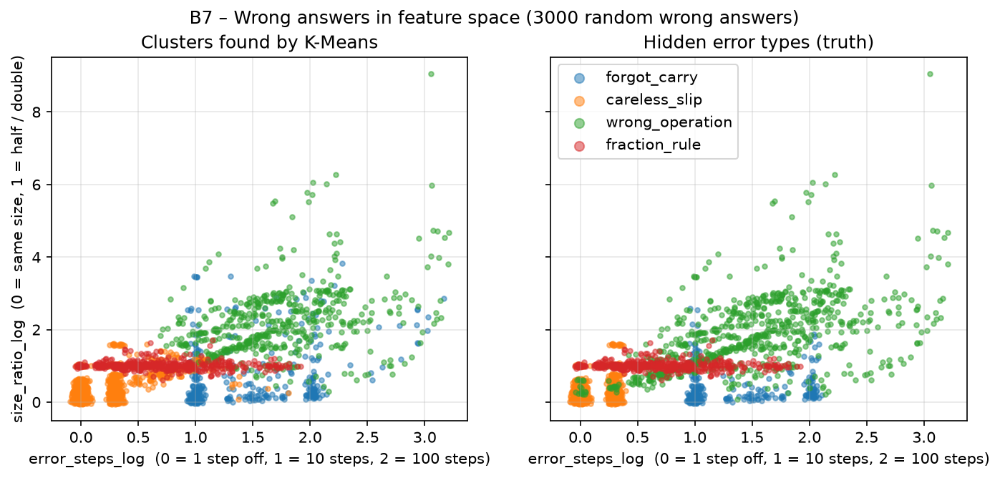
def b7_error_type(operation, a, b, given): # fractions as text "1/2"
parse = lambda x: tuple(int(p) for p in x.split("/")) if "/" in str(x) else int(x)
... if value(given) == value(correct): return None # correct answer -> no error
return {"error_type": b7_predict(one).iloc[0], "hint": B7_HINTS[error_type]}
47 + 38 = 75 -> forgot_carry | 47 + 38 = 84 -> careless_slip | 7 × 8 = 15 -> wrong_operation 1/2 + 1/3 = 2/5 -> fraction_rule | 1/2 + 1/3 = 4/6 -> careless_slip | 47 + 38 = 85 -> None Can per week (carry/slip/operation/fraction): week1 4/12/3/4 ... week4 1/8/1/1
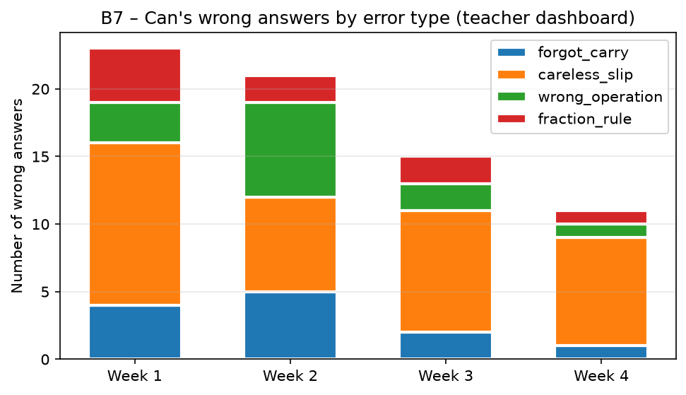
Karakteristik hata: "en sık hata" herkeste careless_slip (200 öğrencinin 191'i) → bir şey söylemiyor. Bunun yerine öğrencinin bir tipi sınıf ortalamasından ne kadar daha sık yaptığı: oran = kendi payı ÷ ortalama pay; en büyük oran = karakteristik hata. Dağılım: wrong_operation 67, forgot_carry 51, careless_slip 44, fraction_rule 38. Can: forgot_carry oranı 1.51 → karakteristik hatası forgot_carry (B8'in girdisi). Can'ın eğilimi güçlü olsa da oran sadece 1.5 çünkü hatalarının çoğu eldenin mümkün olmadığı sorularda.
Görevi: 25 kişilik sınıftaki öğretmene "hangi tür öğrencilerim var ve her türle ne yapmalıyım?" cevabı (R8). Kimse çocuklara "tip A" etiketi vermez → unsupervised.
def learning_speed(log):
history = add_history_features(log)
X = pd.get_dummies(history[["topic","attention"]]); X["attempt_per_10"] = history["attempt_no"]/10; X["difficulty"] = ...
model = LogisticRegression(max_iter=1000).fit(X, history["is_correct"])
return model.coef_[0][list(X.columns).index("attempt_per_10")]
def b8_student_row(log, characteristic_error):
return {"avg_accuracy": log["is_correct"].mean(), "learning_speed": learning_speed(log),
"avg_attention": (log["attention"] == "attentive").mean(),
"spoken_answer_ratio": (log["answer_mode"] == "speech").mean(), "characteristic_error": characteristic_error}
attempt_no'nun (10 soru başına) katsayısı = pratik yaptıkça doğru olma
log-odds'u ne kadar artıyor (konu, zorluk, dikkat sabit tutularak). İlk fikir "4 hafta sonra − başlangıç mastery" idi ama düşük başlayan çocuklar hızlı görünüyordu
(gizli öğrenme hızıyla korelasyon 0.36); eğimle 0.74.pd.get_dummies: pandas'ın one-hot fonksiyonu.b8_prepare = ColumnTransformer([("numeric", StandardScaler(), B8_NUMERIC),
("error", OneHotEncoder(categories=[ERROR_TYPES]), ["characteristic_error"])],
transformer_weights={"numeric": 1.0, "error": 0.5})
Neden 0.5 ağırlık? İki farklı hata tipi one-hot'ta √2 ≈ 1.4 uzaklıkta – bu, sayısal bir sütundaki büyük bir farka eşit. Ağırlık vermeseydik K-Means sınıfı sadece hata tipine göre bölebilirdi. 0.5 ile hata tipi bilgi ekliyor ama baskın olmuyor. Çıktı: öğrenci başına 8 sütun.
k: 2 3 4 5 6 7 8 silhouette: 0.211 0.204 0.194 0.192 0.187 0.186 0.187
Dürüst sonuç: silhouette her k'da ~0.2 ve net bir dirsek yok. Çocuklar birkaç ayrı tipten oluşmuyor; yetenek, hız, dikkat süreklidir. K-Means yine de faydalı bir segmentasyon (bölümleme) verir. k = 4 seçildi: öğretmenin uygulayabileceği 4 strateji, isimlendirmesi kolay.
def describe_profile(center_z):
tags = center_z[center_z.abs() >= 0.5].abs().sort_values(ascending=False).index
parts = [PROFILE_TAGS[f][0 if center_z[f] > 0 else 2] for f in tags] # name
advice = [PROFILE_TAGS[f][1 if center_z[f] > 0 else 3] for f in tags] # recommendation
Merkezler ölçekli (z) halde: ortalamadan en az 0.5 std farklı olan özellikler profilin adını verir (en güçlüsü önce, en fazla 2 isim). Her özelliğin yüksek/düşük
için bir adı ve önerisi var (PROFILE_TAGS), örn. düşük dikkat → "Easily distracted – 10 dakikalık kısa oturumlar, molalar, oyun öğeleri".
| Profil | Öğrenci | accuracy | speed | attention | spoken | Öneri |
|---|---|---|---|---|---|---|
| 0 Fast learner · Prefers writing | 62 | 0.678 | 0.440 | 0.753 | 0.261 | bir üst seviyeye erken geç; yazılı cevap; zor problemler |
| 1 Prefers speaking | 56 | 0.640 | 0.322 | 0.697 | 0.577 | sesli cevap + ses kalibrasyonu (B5a.9) |
| 2 Slow progress · Needs support | 38 | 0.481 | 0.110 | 0.754 | 0.380 | daha çok pratik, aralıklı tekrar, kolaydan başla |
| 3 Easily distracted | 44 | 0.577 | 0.298 | 0.483 | 0.336 | kısa oturumlar, mola, oyun öğeleri |
PCA (Principal Component Analysis): 8 boyutlu öğrenci verisini, verideki çeşitliliği en çok koruyan 2 yöne izdüşürerek 2 boyutlu çizilebilir hale getirir. Sadece görselleştirme için kullanılıyor (kümeleme 8 boyutta yapıldı).

avg_attention ↔ hidden distractibility -0.98 | spoken_answer_ratio ↔ speech preference 0.99 learning_speed ↔ learning rate 0.75 | avg_accuracy ↔ ability 0.75 "Easily distracted" hidden distractibility 0.413 (others 0.15–0.21); "Slow progress" ability -0.706 (lowest)
Profiller, K-Means'in hiç görmediği gerçek gizli farklara karşılık geliyor. En gürültülü girdi learning_speed: 4 haftada ~250 cevap bir eğimi ölçmek için az.
Can: accuracy 0.581, speed 0.326, attention 0.611, spoken 0.527, forgot_carry -> profile 1 – Prefers speaking: voice answers + calibration; error hint: practise carrying step by step
b8_student_profile(...): yeni öğrenciyi eğitilmiş ön işlemeyle sadece transform eder, en yakın merkeze atar. Can K-Means eğitiminde yoktu → gerçek "yeni öğrenci" örneği.
Label = modelin tahmin etmeyi öğrendiği doğru cevap sütunu = y. Supervised bloklarda var, unsupervised bloklarda yok.
Her blokta label'ın tanımlandığı satırın hemen altına şu çağrıyı ekledik:
show_label("B4", y_b4) -> [B4] SUPERVISED – label y = column 'state', 3 classes, 1500 rows
classes: attentive (500), distracted (500), tired (500)
show_no_label("B7", B7_FEATURES) -> [B7] UNSUPERVISED – no label y. The model only sees X = ['size_ratio_log', ...]
| Blok | Label (y) | Blok | Label (y) |
|---|---|---|---|
| B1 | interest (+ sentiment) | B6 | is_correct (0/1) |
| B2 | topic (+ sentiment) | B7 | yok – K-Means sadece X görür |
| B3 | digit | B8 | yok |
| B4 | state (attentive/distracted/tired) | B9 | root_cause (12 beceri + careless) |
| B5a | digit (dosya adının ilk harfi) | B10 | yok – association rules |
| B5b | state (confident/hesitant) |
true_error_type ve B8'deki b8_hidden label değildir: veri sentetik olduğu için gerçeği biliyoruz, K-Means'e
hiç verilmez, sadece sonunda "doğru gruplamış mı?" kontrolü (ARI) için kullanılır. Hoca "unsupervised'da label nerede?" derse:
"Eğitimde label yok; sadece değerlendirme için saklanmış gerçek gruplar var, çünkü veri sentetik."DIAGRAM_BLOCKS = {"B4": ("Attention", "Supervised", "Visual", "state", "b4_detect_attention"), ...} # 11 blok
DIAGRAM_ARROWS = {("B7", "B9"): "error type", ("B9", "TUTOR"): "root cause -> learning path", ...} # 32 ok
def arrow(source, target, message):
assert (source, target) in DIAGRAM_ARROWS # diyagramda olmayan bir ok kullanılırsa HATA verir
used_arrows.add((source, target))
print(f"{source:>7} -> {target:<9} {message}")
diagram/block_diagram.svg) kodda veri olarak yazılı: her blok, türü, label'ı ve blok fonksiyonu; her ok ve üzerinden ne aktığı.arrow(...) çağırır → çıktıda B7 -> B9 error type: forgot_carry gibi satırlar görünür.TUTOR öğrenen bir blok değil, düz program mantığı: soru yazar, cevabı B3/B5a ile okur, notlar, B9'un sorularını sorar, öğrenme yolunu uygular.DIAGRAM_ARROWS hatların listesi, arrow() turnike. Demo her istasyon geçişinde turnikeden geçer
ve kayıt bırakır; haritada olmayan bir hattan geçmeye çalışırsa turnike kapanır (assert). Gün sonunda "bütün hatlar kullanıldı mı?" diye bakarız.Can 47 + 38 = 75 yazıyor. B7 "forgot_carry" diyor. Ama neden? Üç farklı çocuk aynı cevabı verebilir:
| Gerçek sebep | Ne öğretilmeli |
|---|---|
Onluk kavramını bilmiyor (place_value) | Çubukları onlu demet yapma, sonra elde |
Onluğu biliyor, eldeyi unutuyor (carrying) | Sütun toplama, 10 birlik = 1 onluk |
Her şeyi biliyor ama pencereden bakıyordu (careless) | Yeni ders yok; mola, "cevabını kontrol et" |
SKILL_MAP = {"number_recognition": [], "counting": ["number_recognition"], "addition_facts": ["counting"],
"place_value": ["counting"], "carrying": ["addition_facts", "place_value"], ...} # 12 beceri
PROBES = {"number_recognition": ("[shows the digit 7] What number is this?", 7),
"place_value": ("How many tens are there in 38?", 3), ...}
skills_for_question("addition", has_carry=1) -> number_recognition, counting, operation_meaning, addition_facts, place_value, carrying
with_prerequisites: bir becerinin önkoşullarını, onların önkoşullarını… toplar (while todo: döngüsü = ağaçta yukarı yürümek).def make_skill_student(rng):
ability = rng.normal(0, 1.2)
for skill in SKILLS:
ready = all(known[p] for p in SKILL_MAP[skill]) # önkoşullar biliniyor mu?
known[skill] = rng.random() < (sigmoid(SKILL_EASE[skill] + ability) if ready else 0.05)
def make_episode(...): # yanlış cevap üretene kadar soru sorar
cause = missing[0] # sorunun gerektirdiği, çocuğun bilmediği EN TEMEL beceri = LABEL
given = answer_from_root_cause(topic, a, b, cause, rng) # o eksikle yazılacak yanlış cevap
row[f"answer_{skill}"] = answer_probe(...) # 12 probe'un cevabı saklanır (1 / 0.5 / 0)
root_cause): sorunun gerektirdiği becerilerden çocuğun bilmediği en temel olanı; hepsini biliyorsa careless.add_b7_error_type) → B7'nin çıktısı B9'un girdisi (diyagramdaki B7 → B9 oku).What B7 sees vs. the real cause: counting -> 100% careless_slip, addition_facts -> 96% careless_slip,
times_tables -> 95% careless_slip, place_value -> 38% forgot_carry / 60% wrong_operation
B9'un iki parçası var, ikisi de aynı eğitim verisinden öğrenir:
| Parça | Girdi | Çıktı |
|---|---|---|
| (a) Decision Tree | bağlam: topic, needs_carry, digits_reversed, error_type (B7), attention (B4), answer_hesitant (B5b), topic_mastery (B6) | ilk tahmin: her sebebin olasılığı |
| (b) Probe tablosu | eğitimdeki çocukların probe cevapları | P(cevap | sebep) |
B9_PROBE_TABLE[cause][skill] = (counts + 1) / (counts.sum() + 3) # Laplace smoothing: hiçbir olasılık 0 olmasın
def bayes_update(belief, skill, answer):
likelihood = [B9_PROBE_TABLE[c][skill][answer] for c in classes]
new = belief * likelihood # yeni P(c) ∝ eski P(c) × P(cevap | c)
return new / new.sum() # toplam 1 olsun
max_depth=8: en fazla 8 soru; 8, eğitim çocuklarında öğrenciye göre gruplanmış 5 katlı çapraz doğrulamayla (GroupKFold) seçildi, test çocuklarıyla değil;
min_samples_leaf=20: her yaprak en az 20 örneğe dayanır. Ölçekleme gerekmez (ağaç tek sütunu bir eşikle karşılaştırır). Test doğruluğu tek başına 0.563.digits_reversed: rakamlar doğru ama sırası ters mi (37 → 73)? B7'de olmayan tek ek özellik; sayıları tanımayan çocuğun tipik işareti.GroupShuffleSplit, B6'daki gibi): test çocukları eğitimde hiç görülmez.def expected_entropy(belief, skill): # bu probe'u sorarsam ortalama ne kadar belirsizlik kalır?
for answer in [0, 0.5, 1]:
p_answer = Σ belief[c] × P(answer | c)
total += p_answer × entropy(bayes_update(belief, skill, answer))
def b9_diagnose(case, ask_child, min_probes=1, max_probes=4, confident_at=0.8):
skill = min(candidates, key=lambda s: expected_entropy(belief, s)) # en bilgilendirici probe
answer = ask_child(skill) # çocuğa gerçekten sor
belief = bayes_update(belief, skill, answer)
ask_child bir fonksiyon: değerlendirmede saklı cevabı açar, demoda gerçekten B5a/B3/B5b üzerinden çocuğa sorar. method accuracy probes
B7 only 0.307 0.000 <- B7'nin tipini direkt çevirmek
B9 tree only 0.563 0.000 <- sadece bağlam
B9 adaptive 0.823 2.278 <- ORTALAMA 2.3 SORUYLA
B9 all probes 0.829 6.357 <- bütün soruları sormak
def b9_learning_path(root_cause, topic, has_carry, interest, skill_map):
ladder = skills_for_question(topic, has_carry, skill_map) # sorunun merdiveni, öğretim sırasıyla
steps = ladder[ladder.index(root_cause):] # kök nedenden başla, soruya kadar çık
# her adım: SKILL_TIPS ipucu + B1 ilgisine göre 3 alıştırma (practice_item) + "3 doğru üst üste -> geç"
Step 1: place_value – Bundle sticks into tens ... "86 goals: how many full tens is that?" Step 2: carrying – 10 ones become 1 ten ... "You have 26 goals and get 5 more. How many?"
careless → yeni ders yok: "cevabını kontrol et", B4 yorgun diyorsa mola.b10_df: one row = one child's placement test, one 0/1 column per skill (known = at least 3 of 5 probes correct)
rule "knows B -> knows A": support = P(A and B) confidence = P(A | B) lift = P(A and B) / (P(A) P(B))
without_rate = P(knows B | does NOT know A)
edge A -> B if without_rate <= 0.10 and confidence >= 0.80 and stronger than the reverse rule
transitive_reduction(edges): remove A -> C if A -> ... -> C exists through other edges
without_rate.skill_map=B10_SKILL_MAP): demo öğretim sırasını veriden alır.| Gün | Ne oluyor | Sonuç |
|---|---|---|
| Pazartesi | B1 sports, B2 multiplication (negatif → kolay başla). 3×4: "seven" (B5a), tereddütlü (B5b) | B7 careless_slip → B9 4 soru, 7×8 yanlış → times_tables → yol → tekrar doğru |
| Çarşamba | 47+38=75 yazıyor (B3, MNIST) | B9: "38'de kaç onluk?" → "8" (tereddüt) → place_value → place_value → carrying → 54+16=70 doğru |
| Perşembe | 26+17=42, B4: distracted; B6: dalgınlık Can'a toplamada 11 puana mal oluyor | B9: "7+8?" doğru → careless → ders yok, mola |
| Cuma | Ela (1. sınıf) 14+23=73 (37'yi ters yazdı) | B7 wrong_operation (yanlış!) → B9: "[7] Bu kaç?" → yanlış → number_recognition → 5 adımlık yol → tekrar doğru |
| Hafta sonu | Öğretmen paneli | B6 hafta başı/sonu, B7 karakteristik hata, B8 profil, B9 teşhisler, B10 sınıf örüntüleri |
tutor_episode): belirti → teşhis → öğretim → ölçüm → tekrar. Yoldan sonra aynı türde yeni soru; cevap çocuğun şu an bildiklerinden hesaplanır; hâlâ yanlışsa B9 yeniden teşhis koyar (en fazla 3 tur).BLOCKS_ENABLED["B3"] = False → çocuk klavyeyle yazar, teşhis yine çalışır. BLOCKS_ENABLED["B9"] = False → sadece B7'nin "elde çalış" ipucu: onluğu bilmeyen çocuk için yanlış ders.Dört karar sabit kuraldan değil, modellerden geliyor. Diyagrama bu yüzden iki ok eklendi: B6 → TUTOR ve B8 → TUTOR (toplam 32).
| Karar | Kod | Nasıl |
|---|---|---|
| Dalgınlık → mola (B4 + B6) | b6_attention_cost() | B6'ya aynı çocuk ve konu için iki kez sorulur: bir kez attention = attentive, bir kez B4'ün şu an gördüğü dikkatle. Aradaki fark dalgınlığın maliyeti (puan). ≥ 15 ise (B8 "Easily distracted" ise ≥ 10) mola. |
| Ustalık → sonraki konu (B6) | next_topic() | Konu ≥ %80 ise müfredat sırasındaki ilk öğrenilmemiş konuya geçilir. |
| Profil → tempo (B8) | b8_pace() | Profil merkezinin z-skorlarından (|z| ≥ 0,5, profil isimleriyle aynı kural): hızlı öğrenen 2 doğruda seviye atlar, yavaş olan 4'te, diğerleri 3'te; dalgın profil daha erken mola alır; sesli cevap seven çocuğa mikrofon önce önerilir. |
| Tereddüt (B5b) | lesson.py | Doğru ama tereddütlü cevap seviye atlamaya sayılmaz; aynı türden bir soru daha sorulur (tahmin etmiş olabilir). |
Maliyet sayısı nereden geliyor? B6'nın öğrendiği katsayılardan: attentive +0,52, distracted −0,23, tired −0,08 (log-odds). Dalgın ile dikkatli arasındaki fark −0,75 log-odds. Bu fark yüzde puana çevrilince çocuğun seviyesine göre değişiyor: Can toplamada (%87) 11 puan, çarpmada (%54) 18 puan kaybediyor. Yarım bilinen konuda dalgınlık daha pahalı.
Dürüst not: Bu bir model tahmini, nedensellik değil. Çocuk zorlandığı için de dalıyor olabilir. Veri sentetik: simülasyonda etkiyi biz koyduk (−0,8 / −0,5), B6 buna yakın değerleri veriden geri buldu.
cd webapp değil, proje klasöründen: python webapp/export_models.py (bir kez, ~40 sn), sonra python webapp/app.py → http://localhost:8000. İlk sayfa "Lesson · all blocks".b5a_calibrate() B5a'yı bu kayıtlar 10× ağırlıkla sayılarak yeniden eğitir (notebook B5a.9b: k=3'te %70 → %80). Sunumdan önce mutlaka yapın!read_answer() ile aynı kural): tek rakamlı cevap → sesle (B5a 0–9'u tanır, B5b tereddüdü ölçer; "Bu kaç?" gibi kontrol soruları da sesli); çok basamaklı → yazarak, her kutuya bir rakam (B3); kesir ve sohbet → klavye ("/" işaretini hiçbir blok okuyamaz).B7 → B9 error type: forgot_carry b7_error_type()). Hoca "kodun neresinde?" derse buradan gösterin.webapp/lesson.py yeni bir model eğitmez: notebook'un fonksiyonlarını çağırır. B9'un döngüsü notebook'ta b9_next_probe / bayes_update / b9_decision adımlarına bölündü, çünkü sayfa her kontrol sorusunda çocuğu bekliyor (notebook sonuçları değişmedi).Hoca kendi anlattığı konuları projede görmek isteyecek. Syllabus'ın konuları ve bizdeki karşılıkları raporun 18. bölümünde tablo olarak var. En olası üç soru:
| Derste | Projede | Sonuç |
|---|---|---|
| K-Means++ (8. hafta) | Notebook B7.3b: kmeans_plus_plus_init() kendi yazdığımız başlatma; bütün KMeans(...) çağrılarında init="k-means++" |
Tek başlangıçla 20 deneme: rastgele başlangıç ortalama inertia 15.367, bizim K-Means++ 13.595, scikit-learn 12.697 (en kararlı) |
| Lexicon priors (5. hafta) | Sentiment bölümü: lexicon_features() → pos_ratio, neg_ratio, net_sentiment, StandardScaler, TF-IDF'in yanına hstack |
30 mesajla %54 → %65, 60 mesajla %60 → %68; tüm veriyle fark yok (%90,5 / %89,6) |
| Outlier analysis (syllabus) | Notebook B8.5b: profil merkezine uzaklık (95. yüzdelik eşik) + Isolation Forest; b8_outlier_check() |
10'ar öğrenci işaretlendi, 4'ü ortak; işaretlilerin gizli özellikleri daha uç (|z| 2,2 vs 1,4) |
show_label(...) / show_no_label(...) satırı; notebook'ta bu isimleri arayın. Bölüm 0.1'deki DIAGRAM_BLOCKS tablosunda her bloğun label'ı yazılı. B9'un label'ı root_cause, B10'unki yok.DIAGRAM_ARROWS'ta tanımlı; demoda arrow("B7", "B9", ...) satırı onu kullanıyor ve çıktıda "B7 -> B9 error type: ..." olarak görünüyor. 10.7'de 32/32 ok kontrolü.digits_reversed = 1, ağaç number_recognition'dan şüphelenir, ilk soru "[7'yi gösterir] What number is this?" – yanlış → number_recognition %98 → öğretim rakamlardan başlar.export_text ile yazdırıp öğretmene "neden" açıklanabilir. Denedik: probe'ları ağaca sütun yapınca yanlış cevaplı probe görmezden gelinebiliyordu → ağaç + Bayes tasarımına geçtik.b6_attention_cost dalgınlığın bu çocuğa bu konuda kaç puana mal olduğunu hesaplar, eşik üstündeyse mola verilir. Eşik B8 profiline göre değişir.attention onun bir girdisi. Aynı satırı sadece attention sütununu değiştirerek iki kez tahmin ettiriyoruz; fark = maliyet.Hoca herhangi birimize herhangi bir bloğu sorabilir. Aşağıdakileri herkes kendi cümleleriyle anlatabilmeli.
| Blok | Ne yapar | Tür | Modalite | Veri | Model | Ana sonuç |
|---|---|---|---|---|---|---|
| B1 | Mesajdan ilgi alanı (+ sentiment) | Sup. | Metin | Sentetik | TF-IDF + LogReg | test 0.884 |
| B2 | Zorlanılan konu (+ sentiment) | Sup. | Metin | Sentetik | TF-IDF + LogReg | test 0.892 |
| Sent. | positive/neutral/negative | Sup. | Metin | Sentetik | TF-IDF (1,2) + LogReg | CV 0.910 (bigram) vs 0.898; test 0.905 |
| B3 | El yazısı rakam | Sup. | Görsel | Gerçek load_digits / MNIST | LogReg / Random Forest | 0.972 / 0.969, gerçek 6'yı MNIST okudu |
| B4 | Dikkat (attentive/distracted/tired) | Sup. | Görsel | Sentetik | Imputer + Random Forest | train 0.946 / test 0.897 |
| B5a | Sesli rakam | Sup. | Ses | Gerçek FSDD | MFCC + LogReg | 0.915; yeni ses 0.496; kalibrasyon 0.70–0.82 |
| B5b | Özgüven (confident/hesitant) | Sup. | Ses | Sentetik | Scaler + LogReg | test 0.935; en güçlü: response_delay |
| B6 | Konu başına mastery % zamanla | Sup. | Birleşik | Simülasyon | ColumnTransformer + LogReg | AUC 0.725, hata 8.1 vs formül 16.0 |
| B7 | Hata tipleri | Unsup. | Birleşik | Simülasyon | Özellik tasarımı + K-Means k=4 | silhouette 0.717, ARI 0.768 (ham 0.028) |
| B8 | Öğrenci profilleri + öneri | Unsup. | Birleşik | Simülasyon | K-Means k=4 | silhouette ~0.2, 4 anlamlı profil |
| B9 | Yanlışın kök nedeni (eksik beceri) + öğrenme yolu | Sup. | Birleşik (sesle sorar) | Simülasyon | Decision Tree + Bayes, entropy ile soru seçimi | %82, ort. 2.3 soru (B7: %31); ~2.5× hızlı öğrenme |
| B10 | Beceri haritası (önkoşullar) | Unsup. | Birleşik | Simülasyon | Association rules + transitive reduction | 12/14 bağlantı, 0 yanlış |
| Kavram | Tek cümlelik açıklama |
|---|---|
| Supervised / unsupervised | Etiketle (cevap anahtarıyla) öğrenme / etiketsiz benzerleri gruplama. |
| Feature / label (X / y) | Modelin girdisi olan sütunlar / tahmin edilen doğru cevap sütunu. |
| train_test_split, stratify | %80 öğren, %20 hiç görmeden sına; stratify sınıf oranlarını iki parçada aynı tutar. |
| fit / transform / predict | fit öğrenir (sadece train'de), transform öğrenileni uygular, predict tahmin eder. |
| Data leakage | Test bilgisinin eğitime sızması; sonuçları sahte şekilde iyi gösterir. Pipeline ve doğru bölme ile önlenir. |
| Pipeline / ColumnTransformer | Adımları zincirler / farklı sütunlara farklı işlem uygular. |
| StandardScaler | Her sütunu ortalama 0, std 1 yapar; LogReg ve K-Means için gerekli, ağaçlar için değil. |
| SimpleImputer | Eksik değeri train medyanıyla doldurur (B4, kameranın yüzü kaybettiği anlar). |
| One-hot encoding | Kategoriyi 0/1 sütunlarına çevirir; bu sütunlar ölçeklenmez. |
| Logistic Regression | Özelliklerin ağırlıklı toplamını sigmoid (2 sınıf) veya softmax (çok sınıf) ile olasılığa çeviren sınıflandırıcı. |
| Decision Tree | Veriyi en iyi ayıran evet/hayır sorularıyla bölen model; derin olursa ezberler. |
| Random Forest | Farklı örneklemlerle eğitilmiş çok ağacın oylaması; oy oranı = olasılık; ezberi azaltır. |
| Feature importance | Ağaçlarda bir sütunun sınıfları ayırmaya katkısının payı. |
| TF-IDF | Metni, ayırt edici kelimelere yüksek ağırlık veren sayı vektörüne çevirir. |
| Bigram (ngram_range=(1,2)) | Yan yana kelime çiftlerini de özellik yapar ("so boring", "not boring"). |
| MFCC | Sesin kısa anlardaki frekans şeklinin 20 sayılık, kulağa benzer özeti; ortalama+std ile 40 sayı. |
| Accuracy / precision / recall / F1 | Genel doğruluk / "dediğimin ne kadarı doğru" / "gerçeklerin ne kadarını buldum" / ikisinin dengesi. |
| Confusion matrix | Satır gerçek, sütun tahmin; köşegen dışı = hangi sınıflar karışıyor. |
| Overfitting | Train çok iyi, test kötü = ezber; train–test farkına bakılır. |
| ROC AUC | Doğru cevaplara yanlışlardan daha yüksek olasılık verme başarısı (0.5 rastgele, 1 mükemmel). |
| Calibration | "%70" dediğinde gerçekten ~%70 oluyor mu; mastery yüzdesi için en önemli kontrol. |
| Knowledge tracing | Öğrencinin cevap geçmişinden bilgisini (mastery) zaman içinde tahmin etmek (B6). |
| GroupShuffleSplit / LeaveOneGroupOut | Öğrenciye / konuşmacıya göre bölme: test grubu eğitimde hiç görülmez. |
| Distribution shift | Gerçek veri eğitim verisinden farklı görünür → test başarısı gerçek başarıyı garanti etmez (B3.8). |
| K-Means | Noktaları en yakın merkeze atayıp merkezleri güncelleyerek k grup oluşturur; önce ölçekleme şart. |
| Elbow / inertia | Merkezlere toplam kare mesafe; düşüşün yavaşladığı k "dirsek". |
| Silhouette | Bir noktanın kendi kümesine diğerlerinden ne kadar yakın olduğu (−1…1, yüksek iyi). |
| Adjusted Rand Index | Bulunan kümelerle gerçek gruplar ne kadar örtüşüyor (1 birebir, 0 rastgele). |
| PCA | Çok boyutlu veriyi en çok çeşitliliği koruyan 2 yöne izdüşürüp çizmek. |
| Sentetik veri | Kodla üretilmiş, sınıfları bilerek karışık veri; gerçek sistemde kamera/mikrofon/cevap kayıtlarından gelir. |
| DistilBERT | Önceden eğitilmiş küçük dil modeli; eş anlamlıları ve bağlamı anlar → B1/B2 için gelecek çalışma. |
arrow(...), 32/32).shift(), öğrenci/konuşmacı bazlı bölme, kalibrasyon kayıtlarını test etmeme, güveni geçmişten alma.DIAGRAM_ARROWS'ta, demo 32/32 kullanıyor.Hocanın duyurusu (STIX, 19 Kasım): sunum 27 Kasım 14:40, B Blok Yunus Emre Salonu. Hoca teslim ettiğimiz projeyle ilgili sorular soracak, sunum sırasında kodda değişiklik isteyebilir ve her öğrenci bütün sorulara cevap verebilmeli. Ara sınav notun %45'i. Yani "benim bloğum değil" diye bir cevap yok: herkes en azından aşağıdaki 25 soruyu ve 8 kod değişikliğini kendi cümleleriyle yapabilmeli.
y = …); 32 ok kodda DIAGRAM_ARROWS.y). Her blokta show_label(...) çıktısı: örn. B4 y = state. Unsupervised bloklarda show_no_label.DIAGRAM_ARROWS (bölüm 0.1); demoda arrow("B7", "B9", ...); 10.7'de 32/32 kontrolü; web'de Code trace sekmesi.b4_detect_attention(gaze, head, blink) → {state, probabilities}).fit, teste transform.kmeans_plus_plus_init(), D(x)² olasılığı.b8_outlier_check().Notebook'u açık tutun, önce Run All (~45 sn). Değişikliği yapın, sadece o hücreyi ve sonrasını çalıştırın, çıktının nasıl değiştiğini söyleyin.
| İstek | Nerede, ne değişir | Beklenen |
|---|---|---|
| "B7'de k'yı 5 yap" | B7.4: KMeans(n_clusters=5, ...); isimlendirme hücresi 5 kümeyi adlandırır | Ölçtük: ARI 0,768 → 0,792 (biraz yükselir, bir tür ikiye bölünür), silhouette 0,717 → 0,678 düşer. k'yı ARI'ye göre seçmedik çünkü gerçekte gizli türleri bilmeyiz; seçimi etiketsiz ölçüler (elbow, silhouette) yapar. |
| "K-Means++ yerine rastgele başlat" | init="random" | Ölçtük: n_init=10 ile aynı sonuç (ARI 0,768, inertia 12.696); fark n_init=1 ile görünür (B7.3b) |
| "Test oranını %30 yap" | İlgili train_test_split(..., test_size=0.3) | Doğruluk birkaç puan oynar; neden: daha az eğitim verisi |
| "B4'te Random Forest yerine Logistic Regression" | B4 model hücresi: classifier'ı değiştir, imputer'dan sonra StandardScaler() ekle | Doğruluk benzer/biraz düşük; özellik önemi yerine katsayılar |
| "B9 %90 emin olunca dursun" | b9_diagnose(..., confident_at=0.9) | Ölçtük: doğruluk 0,823 → 0,825, soru sayısı 2,28 → 2,99 (az kazanç, çok soru) |
| "B10 eşiğini %15 yap" | b10_skill_map(b10_df, max_without_rate=0.15) | Daha çok bağlantı, bazıları yanlış (B10.4 duyarlılık tablosu) |
| "B6'dan bir özelliği çıkar" | B6_FEATURES listesinden çıkar, modeli yeniden eğit | AUC / ustalık hatası kötüleşir → özelliğin katkısı |
| "Outlier eşiğini %90'a indir" | np.percentile(b8_distance, 90) | Ölçtük: 10 → 20 öğrenci |
Altın kural: ne değiştirdiğinizi söyleyin, çalıştırın, sayının neden değiştiğini kendi cümlenizle açıklayın. Bilmediğiniz bir şey sorulursa uydurmayın: "bunu ölçmedik, ölçmek için şunu yapardık" deyin.